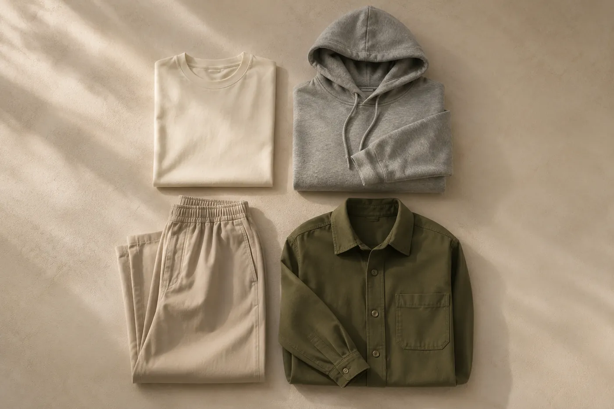

Style guide
How to Build a Minimalist Capsule Wardrobe with Four Essentials
Less clutter. More possibilities. How a few versatile pieces make everyday dressing easier.
This article contains Amazon affiliate links.

Have you ever stood in front of a closet full of clothes and still felt like you had nothing to wear? Usually the problem isn't that we need more clothes. It's that we need pieces that work better together.
That's where a minimalist capsule wardrobe comes in. At FORME, we think everyday style should feel effortless: clean silhouettes, comfortable fits, and neutral colors that give you more freedom to express yourself.
What is a minimalist capsule wardrobe?
A capsule wardrobe is a carefully chosen set of clothes that mix and match into many different outfits. Instead of following every trend, it focuses on versatile pieces that suit the way you actually live.
The best part: you don't need to replace everything you own. Start with a few essentials and build around them.
Four everyday essentials to start with
1. The Essential Tee — your everyday foundation. A well-fitting T-shirt is one of the most versatile things you can own. Wear it with relaxed trousers for a casual look, or under an overshirt for something more put-together. FORME's Essential Tee in Bone has a clean silhouette that sits easily inside a neutral outfit (shop a similar tee).
Styling tip: pair a light tee with darker trousers, or layer it under an open shirt to add depth.
2. The Everyday Hoodie — comfort without compromise. A hoodie doesn't have to be saved for lazy weekends. In the right fit and color it becomes part of your everyday rotation. The Everyday Hoodie in Heather Grey has a relaxed silhouette that pairs naturally with trousers, jeans or sneakers (shop a similar hoodie).
Styling tip: a grey hoodie, stone trousers and simple sneakers is an easy everyday look.
3. The Relaxed Trouser — a versatile alternative to jeans. Relaxed trousers balance comfort and polish. They work for a coffee run, a casual office or an afternoon walking the city. The Relaxed Trouser in Stone has a roomy fit and a subtle taper, so it styles easily with different tops (shop a similar trouser).
Styling tip: tuck in a tee for a cleaner line, or wear them with a hoodie for something more relaxed.
4. The Studio Overshirt — the layer that ties it together. Layering is the easiest way to create new outfits without buying more clothes. The Studio Overshirt in Olive works open over a tee or buttoned up as a top on its own (shop a similar overshirt). For fit details and four ways to wear one, see How to Wear an Overshirt.
Styling tip: olive overshirt, bone tee, stone trousers — a coordinated neutral look that never misses.
How to get more outfits from fewer pieces
The secret is choosing clothes that complement what you already own. Start with a simple palette: bone, grey, stone and olive all work together, which multiplies the combinations. (Not sure whether a light or dark base suits you? Read Bone or Black.)
- Everyday casual: Essential Tee + Relaxed Trouser
- Weekend comfort: Everyday Hoodie + Relaxed Trouser
- Smart casual: Studio Overshirt + Essential Tee + Relaxed Trouser
- Easy layering: Essential Tee + open Studio Overshirt + your favorite jeans
Small changes — switching shoes, rolling sleeves, adding an accessory — give familiar outfits a different personality. Add one more piece and the math gets even better: five pieces can cover a full week.
Why minimalist fashion works
Minimalist fashion isn't about wearing the same outfit every day. It's about making intentional choices. A smaller collection of versatile pieces makes getting dressed easier, cuts unnecessary purchases and helps you build a consistent personal style.
Less noise. More you.
Your wardrobe should work around you, not the other way around. FORME's debut collection explores how four simple essentials can become the foundation of everyday style. You don't need an overflowing closet to express yourself — just the right combination of pieces.
Further reading
FORME is a concept brand built for a graduate digital marketing course. Product links go to comparable garments sold by third parties on Amazon. They are affiliate links: as an Amazon Associate, FORME earns from qualifying purchases.